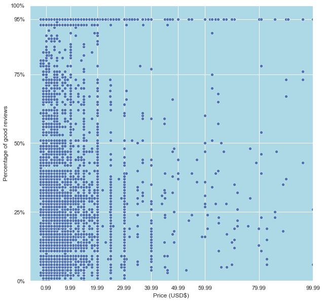

Welcome
We're looking at two metrics; price of a game and the percentage of postitive feedback.
I used this dataset from kaggle which contains 40,000 games from steam.
Here's the price to rating graph for the indie games in the dataset.
As we can see in this graph above, there is a lot of cheap crappy games on steam.
Though this doesn't mean that a cheap indie game is destined to be bad.
We can see there's more highly rated cheap indie games than highly rated expensive games.
The price of a indie game lowers the barrier to entry. Though the higher the price, the more expectation there is for the game.
This explains the more solid line in the top left quadrant of the graph compared to the top right quadrant.
As we zoom in to the cheaper games, we can see the pleathra of cheap crappy games.
But we also see a minor gap around 80% then a big block of highly rated cheap games.
In conclusion, Price doesn't directly affect ratings.
Though a lower price is a lower barrier to entry.
This explains the large amount of crappy games with a low to high percentage of good reviews.
It could also be concluded that a higher price will bring more bad ratings if the indie game sucks.
People value money and if they give you a lot for a bad experience, they will air that out in the form of reviews.
This explains the percentage gap that more expensive games show in the graph.
{kind=link}
{kind=link}